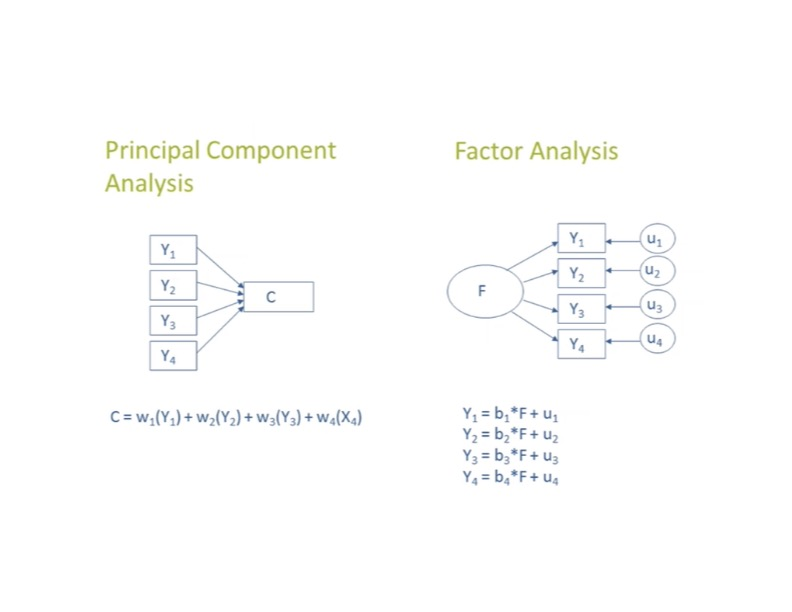
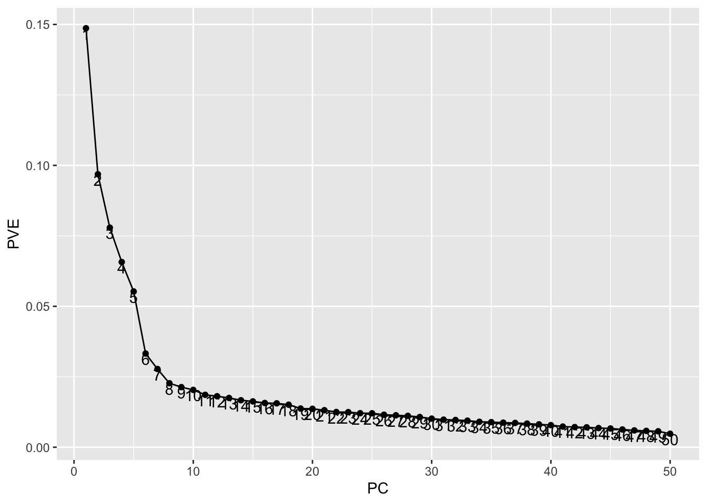
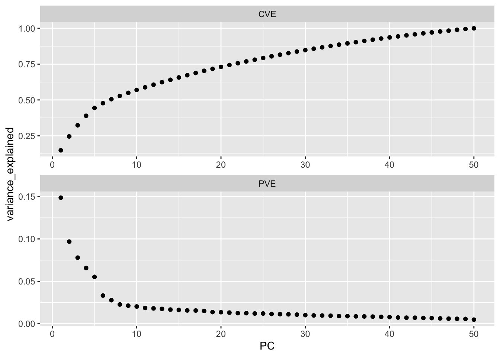
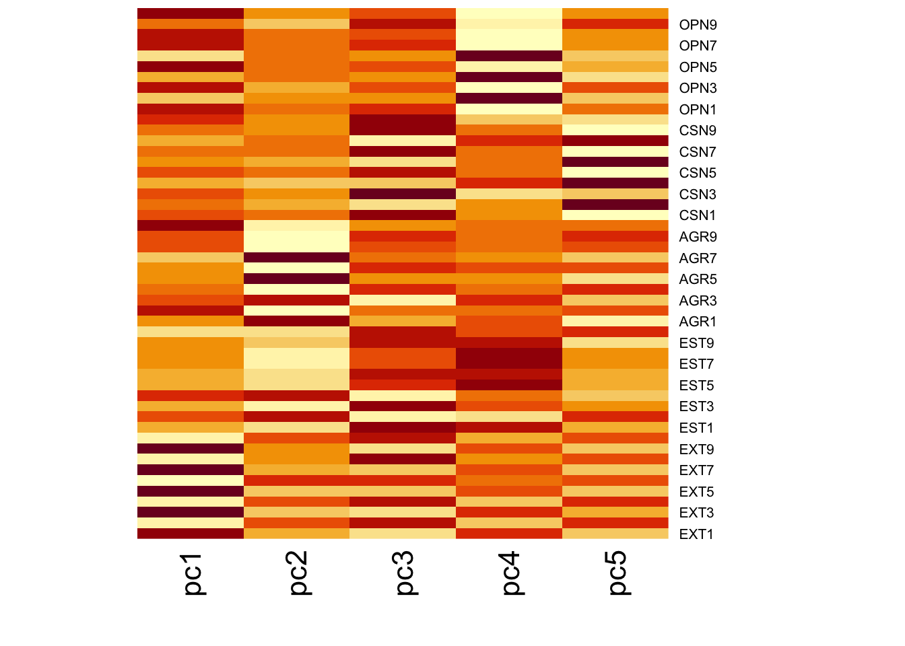
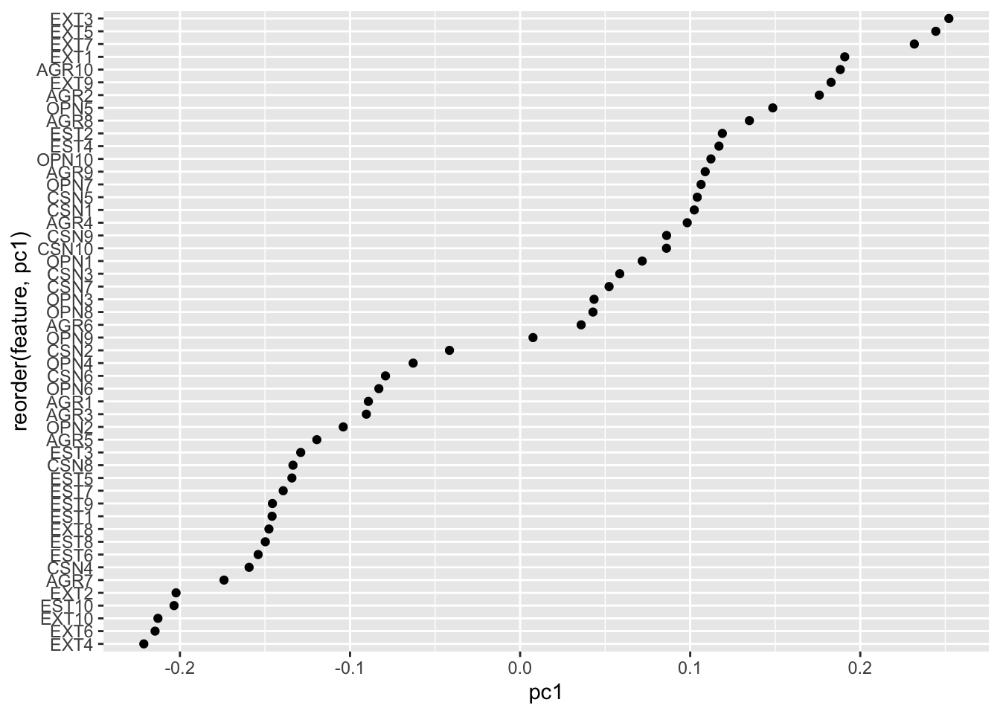
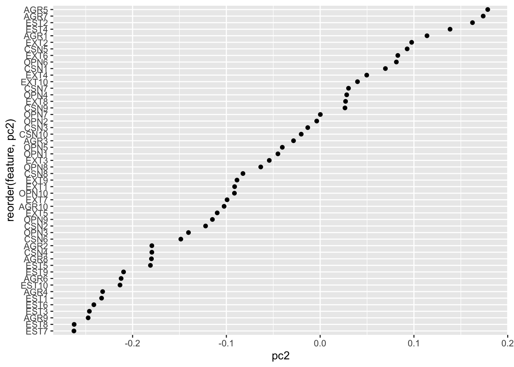
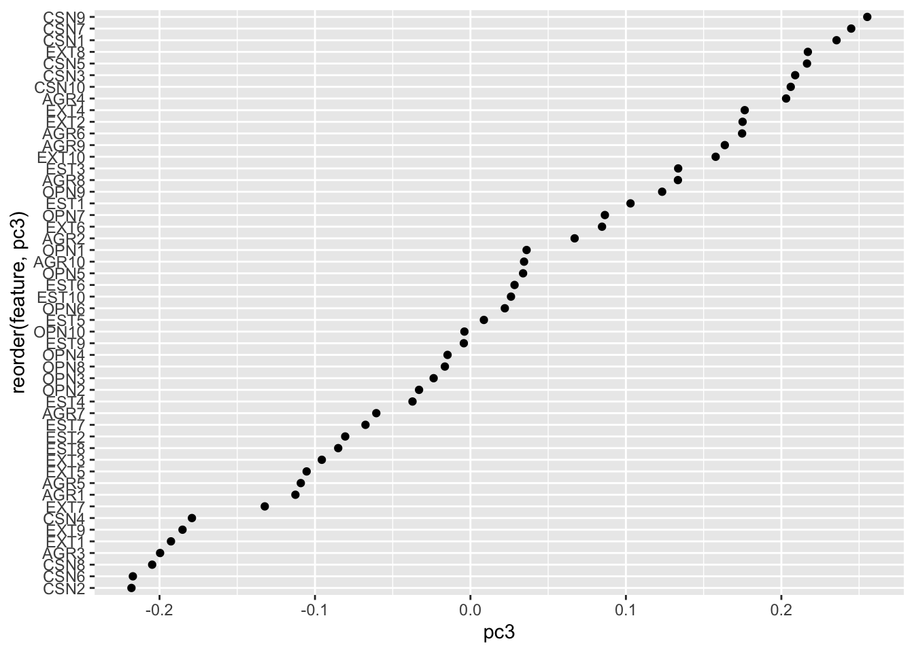

library(h2o)
data <- readRDS("data/data-final.RDS")
#convert variables to numeric
data <- data.frame(lapply(data, function(x) as.numeric(as.character(x))))Principal Components Analysis
A Brief History of Principal Components in Psychology
Early 1900s: Measuring General Intelligence
Psychology was one of the first fields to seriously ask: can we summarize many test scores with just a few underlying dimensions?
In 1904, Charles Spearman noticed that scores on different cognitive tasks (vocabulary, math, memory, etc.) tended to be positively correlated. He argued this was because they all reflected a single underlying factor he called g, or general intelligence.
Mathematically, what Spearman was doing was very close to extracting a dominant dimension from a correlation matrix — which is basically what the first principal component does, even though he didn’t use that term.
So from the very beginning, psychologists were already thinking in “one main dimension explains a lot of the variance.”
1920s–1930s: Multiple Factors, Not Just One
Louis Thurstone (founder of the L. L. Thurstone Lab on the second floor of Davie) pushed back on the “one big g” idea. He argued that mental abilities might not boil down to just one thing, but instead several broad, relatively independent abilities (verbal, spatial, numeric, etc.).
To support that view, he developed methods for taking a big correlation matrix of tests and reducing it to a smaller set of components or factors. The math here starts looking like what we now call factor analysis and principal components: represent a bunch of observed variables using a few weighted combinations.
By the 1930s, psychology was already normalizing the idea that:
- You can replace a large set of test scores with a few summary scores.
- Those summary scores might map onto interpretable traits or abilities.
1930s: “Principal Components” Formalized
In 1933, Harold Hotelling introduced Principal Components Analysis in the modern linear algebra sense: find new uncorrelated variables (components) that are weighted combinations of the original variables and that explain as much variance as possible, in order.
Mid 20th century: Personality, Traits, and Tests
By the 1950s–1960s, psychologists were applying PCA-/factor-like methods to personality items, attitude scales, symptom checklists, etc. The logic was: if we give a long questionnaire, do the items naturally cluster? Do we get a small number of broad traits?
This work helped build models like the Big Five personality traits, which emerged from running dimensionality-reduction (often PCA or exploratory factor analysis) on large adjective rating datasets.
At this point PCA is doing two jobs in psychology:
- Data reduction – shrink a 100-item questionnaire down to a handful of composite scores.
- Structure discovery – argue that those composites correspond to meaningful traits.
Late 20th century: PCA and Machine Learning
As psychology got more quantitative (especially cognitive psychology, neuropsychology, and later neuroimaging), PCA became routine:
- In cognitive tasks: summarize lots of correlated performance measures into a few component scores.
- In clinical/psychopathology research: reduce symptom profiles to core dimensions (e.g., “internalizing,” “externalizing”).
- In modern machine learning: use principal components to de-noise and de-correlate predictors before clustering, regression, or classification.
Difference between PCA and Factor Analysis

PCA (Principal Components Analysis):
- A data reduction technique. It builds new variables (components) that are weighted combinations of the original variables, chosen to capture as much total variance in the dataset as possible.
- Uses all the variance in each variable — common variance (shared with other variables) + unique variance (specific to that variable) + error.
- Are just mathematical directions in the data that maximize variance. They are not assumed to be “real” psychological traits. Interpretation is optional / post hoc.
Factor Analysis
- A latent variable model. It assumes there are unobserved psychological constructs (“factors”) that cause the correlations among the observed variables, and tries to recover those constructs.
- Tries to model only the common variance that is shared across variables.
- Are explicitly interpreted as latent constructs (e.g., “Negative Affect,” “Working Memory,” etc.). The whole point is psychological meaning.
Introduction to PCA
What is PCA and why do we use it?
Principal Components Analysis (PCA) is a technique for dimension reduction.
Many psychology datasets have lots of variables that are correlated.
- Example: multiple items measuring stress, mood, rumination, sleep quality, etc.
Models like regression or clustering can struggle when predictors are:
- Highly correlated (“multicollinearity”)
- Too high-dimensional (too many variables relative to sample size)
Goal of PCA
Create a smaller number of new variables (called principal components) that summarize most of the variation in the original variables.
So instead of working with (say) 20 questionnaire items, we might work with the first 2–3 components.
PCA is unsupervised.
It does not use an outcome / dependent variable.
It only looks at the relationships among the predictors themselves.
How PCA Actualy Works
- Start with your variables (e.g., a set of standardized questionnaire items).
- PCA finds a new axis (a weighted combination of the original items) that captures as much variance as possible.
- This new axis is called PC1 (Principal Component 1).
- Then it finds a second axis (PC2) that:
- Explains as much of the remaining variance as possible,
- Is uncorrelated with PC1.
- Then PC3, PC4, and so on.
Each principal component is:
- A linear combination of the original variables
(e.g., PC1 = 0.40·stress + 0.41·rumination + 0.05·sleep + …), - Chosen to explain variance efficiently, - Statistically uncorrelated with the others.
Important note for interpretation:
PCA components are mathematical, not psychological constructs.
Sometimes they look like factors, but PCA itself is not a measurement model.
Why Psychologists and ML Do In Practice
Noise reduction / denoising:
Keeping only the first few components can filter out random noise in low-variance directions.Visualization:
We can project high-dimensional data down to 2D (PC1 vs PC2) and make scatterplots to see clusters or patterns.Prediction pipeline:
Instead of feeding 20 correlated predictors into a model, we can feed the top 3–5 PCs.
This can help with stability and reduce overfitting.Collinearity fix:
PCs are guaranteed to be uncorrelated, which makes downstream regression estimates more stable.
Example: The Road to the Big Five Personality Traits
The Basic Idea
Researchers wanted to understand how people differ in personality. Instead of starting with a theory like “there are exactly 5 traits,” they started with language.
- Allport & Odbert (1936) went through an English dictionary and collected thousands of adjectives that describe people (e.g., “talkative,” “organized,” “anxious,” “creative”).
- Participants rated themselves (or peers) on large sets of these adjectives.
This produced a huge dataset: - Rows = people - Columns = adjectives (hundreds of them)
Now the problem is: how do you make sense of hundreds of traits at once?
A Solution
PCA (Principal Components Analysis) was used to find patterns in how these adjectives go together.
What PCA asks is basically: > “Which adjectives tend to move together across people?”
For example:
- People who rate themselves as “talkative,” “energetic,” and “assertive” also tend to endorse “outgoing.”
- People who rate themselves as “organized,” “reliable,” and “careful” also tend to endorse “self-disciplined.”
PCA turns these clusters of related adjectives into new summary dimensions (components). Each component is a weighted combination of the original adjectives.
So instead of saying:
- “This person scored on 200 different trait words,” we can say:
- “This person is high on Component 1, medium on Component 2, low on Component 3,” etc.
That is dimensionality reduction.
The Big Five
Across multiple studies the same broad components kept showing up:
- Extraversion (talkative, outgoing, energetic)
- Agreeableness (kind, warm, cooperative)
- Conscientiousness (organized, reliable, disciplined)
- Neuroticism / Emotional Stability (anxious, moody, easily upset vs. calm)
- Openness / Intellect (curious, imaginative, open to new ideas)
These became known as the Big Five.
Modern Takes on The Big Five
There are a number of modern takes on the Big Five worth mentioning.
Generalization of Big Five
The Big Five claims there are five fundamental trait dimensions, but:
- Different item sets, cultures, and languages don’t always give exactly five.
- Maybe the Big Five may reflect English-language descriptors and Western norms more than a truly universal structure.
Description versus Explanation
Big Five scores summarize how people differ (e.g., high Neuroticism), but:
- They don’t tell you why someone is that way, biology, development, stress exposure, culture, roles, trauma, etc.
- They don’t model mechanisms or meaning. They’re statistical summaries, not causal theories.
This makes the Big Five great for prediction, but shallow as an account of personality psychology.
Too Broad for Psychological Utility
Each Big Five trait bundles together many distinct sub-traits:
- Two people can both be high Neuroticism, but one is mostly anxious and the other mostly angry, very different clinical stories.
- Traits also shift across situations (friendly with friends, distant at work), but the Big Five treats traits as global and stable.
For practice (clinical work, intervention targeting, workplace decisions) and for understanding everyday behavior, the broad five factors can be too coarse.
PCA in R
We will demonstrate how to conduct factor analysis using the `h2o’ package in R. This tracts with the examples in the book.
In sticking with our example we will use the Big 5 data from Kaggle. More information, including the codebook for this data, is presented at the end of this section. We have used this data previously for a number of different assignments. The only preproccessing we will do is to convert all variables to numeric.
Next, we’ll start up the h2o instance and convert our data frame to an H2O object.
#h2o.no_progress() # turn off progress bars for brevity
h2o.init(max_mem_size = "5g") # connect to H2O instance
H2O is not running yet, starting it now...
Note: In case of errors look at the following log files:
/var/folders/v0/mqk96srs6nx1865cbg_q5z_r0000gp/T//Rtmp94SNjI/filebe8c7ea62380/h2o_zacharyfisher_started_from_r.out
/var/folders/v0/mqk96srs6nx1865cbg_q5z_r0000gp/T//Rtmp94SNjI/filebe8c4d64e975/h2o_zacharyfisher_started_from_r.err
Starting H2O JVM and connecting: ....... Connection successful!
R is connected to the H2O cluster:
H2O cluster uptime: 1 seconds 743 milliseconds
H2O cluster timezone: America/New_York
H2O data parsing timezone: UTC
H2O cluster version: 3.44.0.3
H2O cluster version age: 1 year, 10 months and 14 days
H2O cluster name: H2O_started_from_R_zacharyfisher_jso601
H2O cluster total nodes: 1
H2O cluster total memory: 5.00 GB
H2O cluster total cores: 16
H2O cluster allowed cores: 16
H2O cluster healthy: TRUE
H2O Connection ip: localhost
H2O Connection port: 54321
H2O Connection proxy: NA
H2O Internal Security: FALSE
R Version: R version 4.5.1 (2025-06-13) # Convert data frame to H2O object
data_h2o <- as.h2o(data)
|
| | 0%
|
|======================================================================| 100%There are a number of parameters we can set when conducting PCA in h2o. These hyperparameters control how the PCA is conducted. The hyperparameters include:
pca_methpd: The PCA algorithm to use. The book recommends using “GramSVD” when all predictors aere numeric and the dataset is not too large. If the dataset is very large, “Randomized” may be a better choice.k: The number of principal components to extract. It’s best to create the same number of PCs as there are features. We will review how to select a smaller number of features.transform: The data transformation method to apply before PCA (e.g., “STANDARDIZE”, “NORMALIZE”, “NONE”).max_iterations: The maximum number of iterations for the PCA algorithm.seed: A random seed for reproducibility.impute_missing: Whether to impute missing values before PCA.
# run PCA
my_pca <- h2o.prcomp(
training_frame = data_h2o,
pca_method = "GramSVD",
k = ncol(data),
transform = "STANDARDIZE",
impute_missing = TRUE,
max_runtime_secs = 1000
)
|
| | 0%
|
|======================================================================| 100%Our model contains the principal components and other useful information. We can print a summary of the PCA model to see the importance of each principal component.
# Print PCA model summary
summary(my_pca)Model Details:
==============
H2ODimReductionModel: pca
Model Key: PCA_model_R_1762285572445_1
Importance of components:
pc1 pc2 pc3 pc4 pc5 pc6
Standard deviation 2.726379 2.200609 1.973673 1.812745 1.662418 1.289290
Proportion of Variance 0.148663 0.096854 0.077908 0.065721 0.055273 0.033245
Cumulative Proportion 0.148663 0.245516 0.323424 0.389145 0.444418 0.477663
pc7 pc8 pc9 pc10 pc11 pc12
Standard deviation 1.178149 1.065502 1.032671 1.008572 0.964420 0.951257
Proportion of Variance 0.027761 0.022706 0.021328 0.020344 0.018602 0.018098
Cumulative Proportion 0.505424 0.528130 0.549458 0.569802 0.588404 0.606502
pc13 pc14 pc15 pc16 pc17 pc18
Standard deviation 0.935047 0.913351 0.901956 0.886021 0.882645 0.868826
Proportion of Variance 0.017486 0.016684 0.016270 0.015701 0.015581 0.015097
Cumulative Proportion 0.623988 0.640673 0.656943 0.672644 0.688225 0.703322
pc19 pc20 pc21 pc22 pc23 pc24
Standard deviation 0.828838 0.825764 0.810549 0.790482 0.789630 0.777218
Proportion of Variance 0.013739 0.013638 0.013140 0.012497 0.012470 0.012081
Cumulative Proportion 0.717062 0.730699 0.743839 0.756336 0.768807 0.780888
pc25 pc26 pc27 pc28 pc29 pc30
Standard deviation 0.776288 0.759688 0.752969 0.746334 0.732433 0.712552
Proportion of Variance 0.012052 0.011543 0.011339 0.011140 0.010729 0.010155
Cumulative Proportion 0.792940 0.804483 0.815822 0.826963 0.837692 0.847846
pc31 pc32 pc33 pc34 pc35 pc36
Standard deviation 0.699805 0.695443 0.686914 0.671967 0.667448 0.660672
Proportion of Variance 0.009795 0.009673 0.009437 0.009031 0.008910 0.008730
Cumulative Proportion 0.857641 0.867314 0.876751 0.885781 0.894691 0.903421
pc37 pc38 pc39 pc40 pc41 pc42
Standard deviation 0.656799 0.647636 0.637350 0.626300 0.605741 0.597968
Proportion of Variance 0.008628 0.008389 0.008124 0.007845 0.007338 0.007151
Cumulative Proportion 0.912049 0.920437 0.928562 0.936407 0.943745 0.950896
pc43 pc44 pc45 pc46 pc47 pc48
Standard deviation 0.594634 0.583688 0.576847 0.561780 0.546760 0.538934
Proportion of Variance 0.007072 0.006814 0.006655 0.006312 0.005979 0.005809
Cumulative Proportion 0.957968 0.964782 0.971437 0.977749 0.983728 0.989537
pc49 pc50
Standard deviation 0.532296 0.489712
Proportion of Variance 0.005667 0.004796
Cumulative Proportion 0.995204 1.000000
H2ODimReductionMetrics: pca
No model metrics available for PCA
Scoring History for GramSVD:
timestamp duration iterations
1 2025-11-04 14:46:14 0.065 sec 0
Variable Importances: (Extract with `h2o.varimp`)
=================================================
Importance of components:
pc1 pc2 pc3 pc4 pc5 pc6
Standard deviation 2.726379 2.200609 1.973673 1.812745 1.662418 1.289290
Proportion of Variance 0.148663 0.096854 0.077908 0.065721 0.055273 0.033245
Cumulative Proportion 0.148663 0.245516 0.323424 0.389145 0.444418 0.477663
pc7 pc8 pc9 pc10 pc11 pc12
Standard deviation 1.178149 1.065502 1.032671 1.008572 0.964420 0.951257
Proportion of Variance 0.027761 0.022706 0.021328 0.020344 0.018602 0.018098
Cumulative Proportion 0.505424 0.528130 0.549458 0.569802 0.588404 0.606502
pc13 pc14 pc15 pc16 pc17 pc18
Standard deviation 0.935047 0.913351 0.901956 0.886021 0.882645 0.868826
Proportion of Variance 0.017486 0.016684 0.016270 0.015701 0.015581 0.015097
Cumulative Proportion 0.623988 0.640673 0.656943 0.672644 0.688225 0.703322
pc19 pc20 pc21 pc22 pc23 pc24
Standard deviation 0.828838 0.825764 0.810549 0.790482 0.789630 0.777218
Proportion of Variance 0.013739 0.013638 0.013140 0.012497 0.012470 0.012081
Cumulative Proportion 0.717062 0.730699 0.743839 0.756336 0.768807 0.780888
pc25 pc26 pc27 pc28 pc29 pc30
Standard deviation 0.776288 0.759688 0.752969 0.746334 0.732433 0.712552
Proportion of Variance 0.012052 0.011543 0.011339 0.011140 0.010729 0.010155
Cumulative Proportion 0.792940 0.804483 0.815822 0.826963 0.837692 0.847846
pc31 pc32 pc33 pc34 pc35 pc36
Standard deviation 0.699805 0.695443 0.686914 0.671967 0.667448 0.660672
Proportion of Variance 0.009795 0.009673 0.009437 0.009031 0.008910 0.008730
Cumulative Proportion 0.857641 0.867314 0.876751 0.885781 0.894691 0.903421
pc37 pc38 pc39 pc40 pc41 pc42
Standard deviation 0.656799 0.647636 0.637350 0.626300 0.605741 0.597968
Proportion of Variance 0.008628 0.008389 0.008124 0.007845 0.007338 0.007151
Cumulative Proportion 0.912049 0.920437 0.928562 0.936407 0.943745 0.950896
pc43 pc44 pc45 pc46 pc47 pc48
Standard deviation 0.594634 0.583688 0.576847 0.561780 0.546760 0.538934
Proportion of Variance 0.007072 0.006814 0.006655 0.006312 0.005979 0.005809
Cumulative Proportion 0.957968 0.964782 0.971437 0.977749 0.983728 0.989537
pc49 pc50
Standard deviation 0.532296 0.489712
Proportion of Variance 0.005667 0.004796
Cumulative Proportion 0.995204 1.000000The Number of Components
We might also be interested in looking at how many components to retain. There are a few different metrics people use to decide how many components to keep.
One common approach is to look at the proportion of variance explained by each component. We can plot this information using a scree plot.
data.frame(
PC = my_pca@model$importance %>% seq_along,
PVE = my_pca@model$importance %>% .[2,] %>% unlist()) %>%
ggplot(aes(PC, PVE, group = 1, label = PC)) +
geom_point() +
geom_line() +
geom_text(nudge_y = -.002)
We might also look at the eigenvalue criterion. Here, we look for components with eigenvalues greater than 1. An eigenvalue greater than 1 indicates that the component explains more variance than a single original variable. The rationale is that we want to retain components that contribute more information than an individual variable.
# Compute eigenvalues
eigen <- unlist(my_pca@model$importance["Standard deviation", ])^2
# Sum of all eigenvalues equals number of variables
sum(eigen)[1] 50# Find PCs where the sum of eigenvalues is greater than or equal to 1
which(eigen >= 1) pc1 pc2 pc3 pc4 pc5 pc6 pc7 pc8 pc9 pc10
1 2 3 4 5 6 7 8 9 10 Another approach looks at the proportion of variance explained by each additional component. We can look for the point where adding more components results in diminishing returns in terms of variance explained.
# Extract and plot PVE and CVE
data.frame(
PC = my_pca@model$importance %>% seq_along(),
PVE = my_pca@model$importance %>% .[2,] %>% unlist(),
CVE = my_pca@model$importance %>% .[3,] %>% unlist()
) %>%
tidyr::gather(metric, variance_explained, -PC) %>%
ggplot(aes(PC, variance_explained)) +
geom_point() +
facet_wrap(~ metric, ncol = 1, scales = "free")
Interpreting Loadings
Although PCA components are mathematical constructs, we can still try to interpret them by looking at the loadings.
First, let’s take a look at the first five components since, theoretically at least, these should correspond to the Big Five personality traits.
h2o.predict(my_pca, data_h2o)[,1:5]
|
| | 0%
|
|======================================================================| 100% PC1 PC2 PC3 PC4 PC5
1 4.4034852 -0.02300749 -2.0925392 -1.2707968 -0.1786033
2 -0.5744698 1.23053169 2.9613075 0.9753085 2.5325375
3 0.5251728 1.36730817 1.5141661 -0.3939534 2.0181211
4 -1.0094766 0.09271204 -1.3379007 -0.8932711 1.9281449
5 4.1255449 1.17299246 4.1277119 -2.1655733 0.6668165
6 1.8850982 2.08198500 0.5130477 -1.2376719 0.9641995
[1000 rows x 5 columns] Next, we can extract the loadings (the weights of each original variable on each principal component) from the PCA model.
loadings <- my_pca@model$eigenvectors[,1:5]
# threshold smaller loadings to zero for easier interpretation
#loadings[abs(loadings) < 0.2] <- 0
heatmap(as.matrix(loadings), Rowv = NA, Colv = NA)
We don’t really see the big 5 emerge in our dataset. This may be due to the fact that we only used 1000 rows of data. You can try running the analysis again using more data to see if the Big Five traits emerge more clearly.
Let’s look at the loadings for the first principal component to see which variables contribute most to this component.
my_pca@model$eigenvectors %>%
as.data.frame() %>%
mutate(feature = row.names(.)) %>%
ggplot(aes(pc1, reorder(feature, pc1))) +
geom_point()
What about the second component.
my_pca@model$eigenvectors %>%
as.data.frame() %>%
mutate(feature = row.names(.)) %>%
ggplot(aes(pc2, reorder(feature, pc2))) +
geom_point()
And the third component.
my_pca@model$eigenvectors %>%
as.data.frame() %>%
mutate(feature = row.names(.)) %>%
ggplot(aes(pc3, reorder(feature, pc3))) +
geom_point()
Finally, when we’re done with our PCA analysis, we can shut down the H2O instance to free up resources.
h2o.shutdown(prompt = FALSE)Big Five Data Info
This data was collected (2016-2018) through an interactive on-line personality test. The personality test was constructed with the “Big-Five Factor Markers” from the IPIP. https://ipip.ori.org/newBigFive5broadKey.htm
Participants were informed that their responses would be recorded and used for research at the beginning of the test, and asked to confirm their consent at the end of the test.
The following items were presented on one page and each was rated on a five point scale using radio buttons. The order on page was was EXT1, AGR1, CSN1, EST1, OPN1, EXT2, etc. The scale was labeled 1=Disagree, 3=Neutral, 5=Agree
EXT1 I am the life of the party.
EXT2 I don’t talk a lot.
EXT3 I feel comfortable around people.
EXT4 I keep in the background.
EXT5 I start conversations.
EXT6 I have little to say.
EXT7 I talk to a lot of different people at parties.
EXT8 I don’t like to draw attention to myself.
EXT9 I don’t mind being the center of attention.
EXT10 I am quiet around strangers.
EST1 I get stressed out easily.
EST2 I am relaxed most of the time.
EST3 I worry about things.
EST4 I seldom feel blue.
EST5 I am easily disturbed.
EST6 I get upset easily.
EST7 I change my mood a lot.
EST8 I have frequent mood swings.
EST9 I get irritated easily.
EST10 I often feel blue.
AGR1 I feel little concern for others.
AGR2 I am interested in people.
AGR3 I insult people.
AGR4 I sympathize with others’ feelings.
AGR5 I am not interested in other people’s problems.
AGR6 I have a soft heart.
AGR7 I am not really interested in others.
AGR8 I take time out for others.
AGR9 I feel others’ emotions.
AGR10 I make people feel at ease.
CSN1 I am always prepared.
CSN2 I leave my belongings around.
CSN3 I pay attention to details.
CSN4 I make a mess of things.
CSN5 I get chores done right away.
CSN6 I often forget to put things back in their proper place.
CSN7 I like order.
CSN8 I shirk my duties.
CSN9 I follow a schedule.
CSN10 I am exacting in my work.
OPN1 I have a rich vocabulary.
OPN2 I have difficulty understanding abstract ideas.
OPN3 I have a vivid imagination.
OPN4 I am not interested in abstract ideas.
Grocery Data Example
To illustrate dimension reduction techniques, we’ll use the my_basket data set. This data set identifies items and quantities purchased for 2,000 transactions from a grocery store. The objective is to identify common groupings of items purchased together.
url <- "https://koalaverse.github.io/homlr/data/my_basket.csv"
my_basket <- readr::read_csv(url)
dim(my_basket)[1] 2000 42